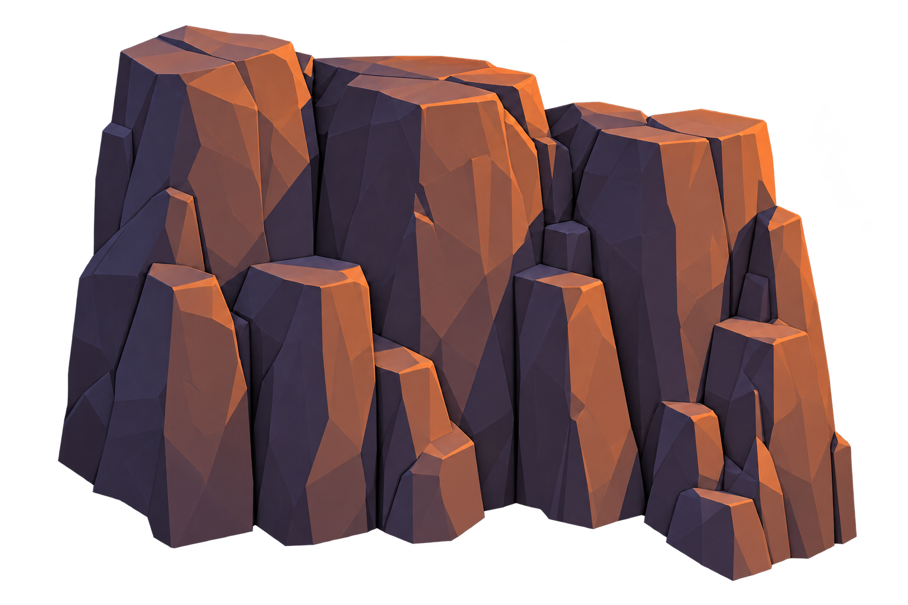 R01 · CliffsTall vertical cliff columnsContinuous rear wall; repeat with overlap and rotation.Modelling target: 6–12 m highLocate in referenceOpen separate PNG ↗
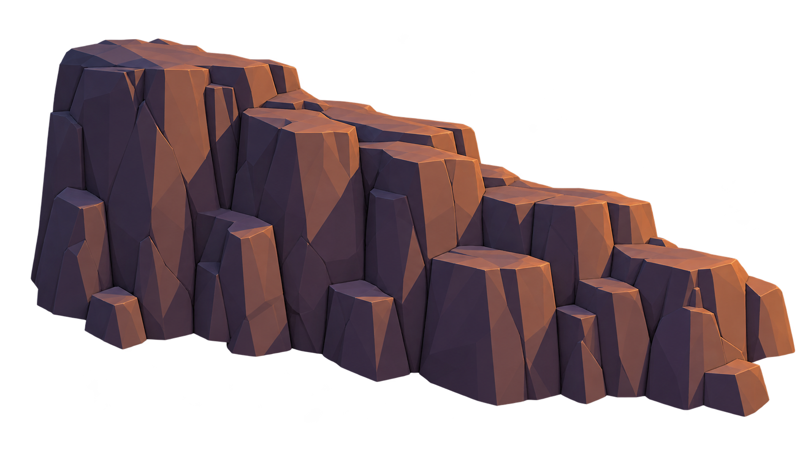 R02 · CliffsStepped low cliff segmentSide wall height transition; keep its lowest boundary taller than the player can cross.Modelling target: 4–8 m highLocate in referenceOpen separate PNG ↗
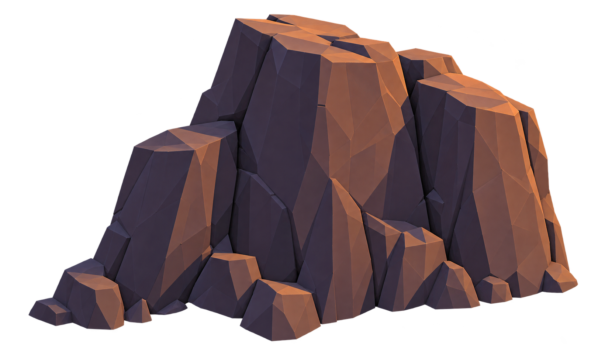 R03 · CliffsLeaning blade cliffRight-hand enclosing cliffs and angled end caps.Modelling target: 4–9 m highLocate in referenceOpen separate PNG ↗
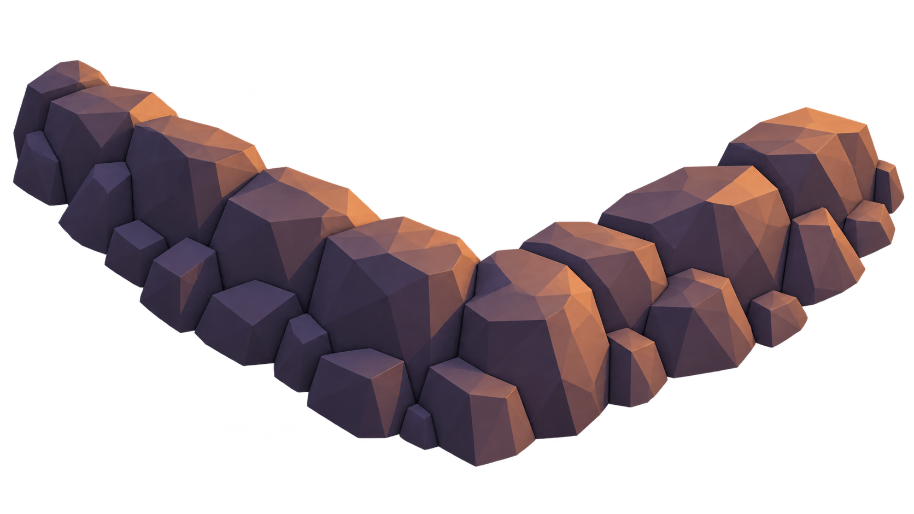 R04 · CliffsClosed corner boulder barrierCorners and foreground boundary trim; overlap a high wall where required.Modelling target: 2–5 m highLocate in referenceOpen separate PNG ↗
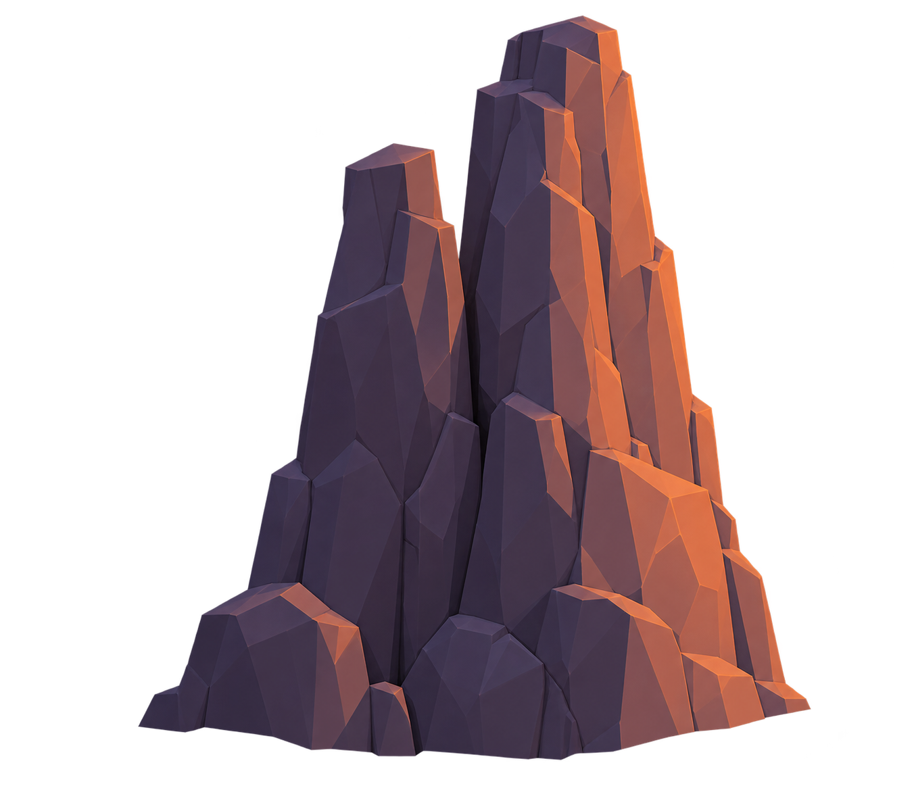 R05 · BackdropTall split monolithDistant skyline landmark outside the gameplay boundary.Modelling target: 10–25 m highLocate in referenceOpen separate PNG ↗
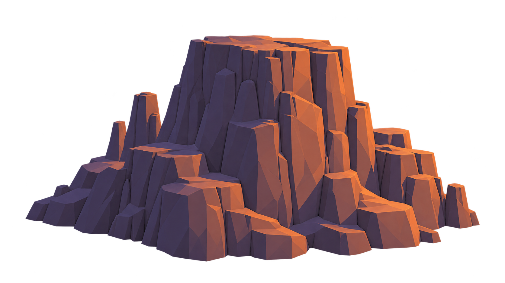 R06 · BackdropLayered mesa backdropDistant silhouette behind the forward approach valley.Modelling target: 20–60 m wideLocate in referenceOpen separate PNG ↗
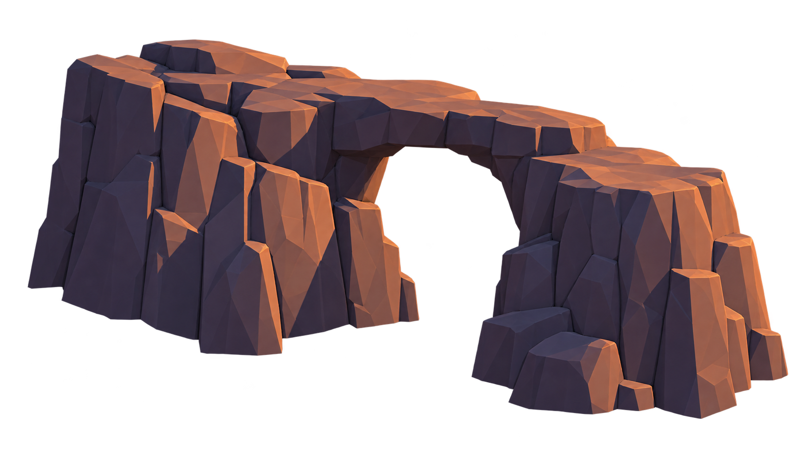 R07 · BackdropNatural rock bridgeFar background only; no apparent accessible bridge behind camp.Modelling target: 15–30 m wideLocate in referenceOpen separate PNG ↗
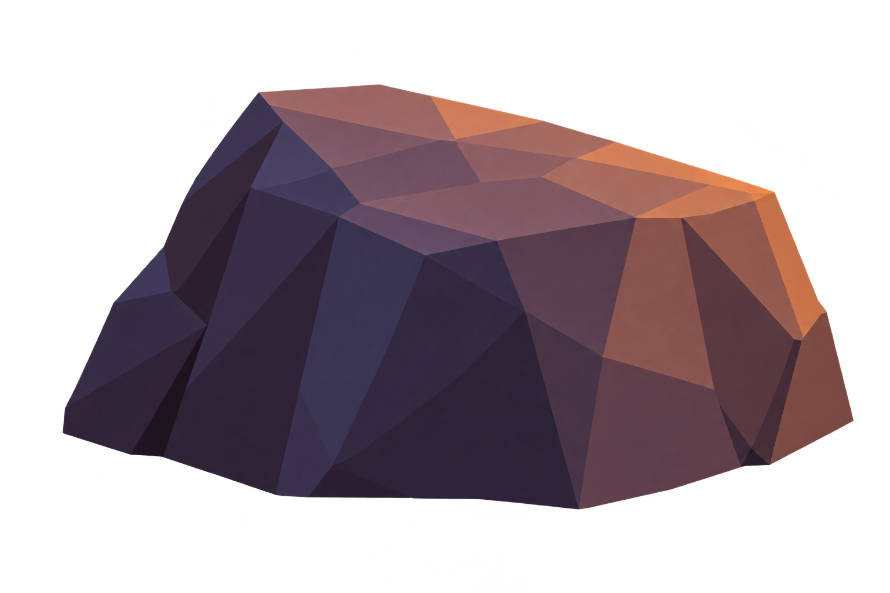 R08 · BouldersLarge angular boulderIndividual low cover and near-ground silhouette variation.Modelling target: 0.6–1.4 m highLocate in referenceOpen separate PNG ↗
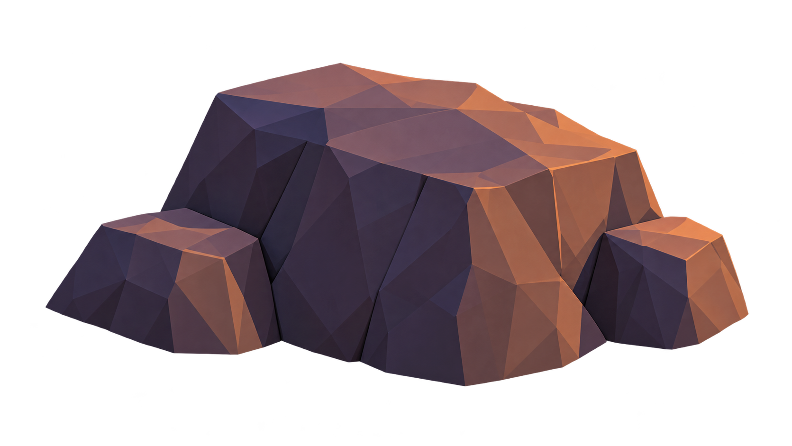 R09 · BouldersBroad low boulder clusterBroad low cover cluster in the forward arena.Modelling target: 2–4 m wideLocate in referenceOpen separate PNG ↗
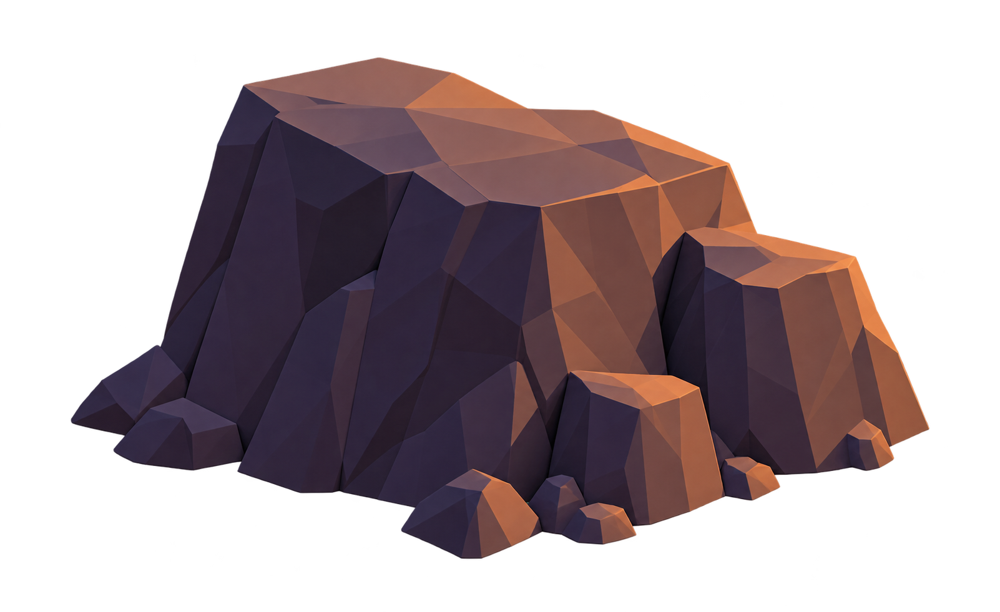 R10 · BouldersUpright cover boulder clusterUpright arena cover; keep routes around both sides.Modelling target: 1.5–2.5 m highLocate in referenceOpen separate PNG ↗
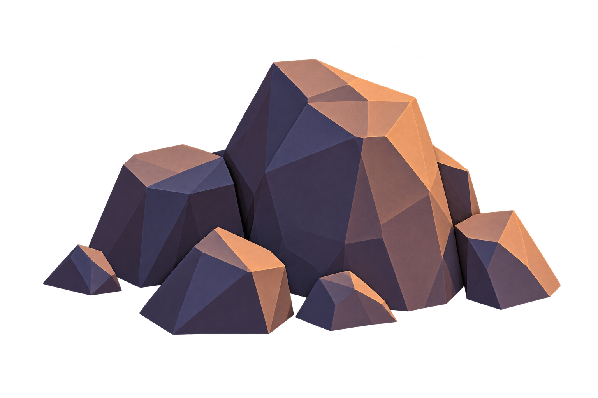 R11 · RubbleSmall broken rock pileSmall piles near larger formations; generally decorative.Modelling target: 0.2–0.7 m highLocate in referenceOpen separate PNG ↗
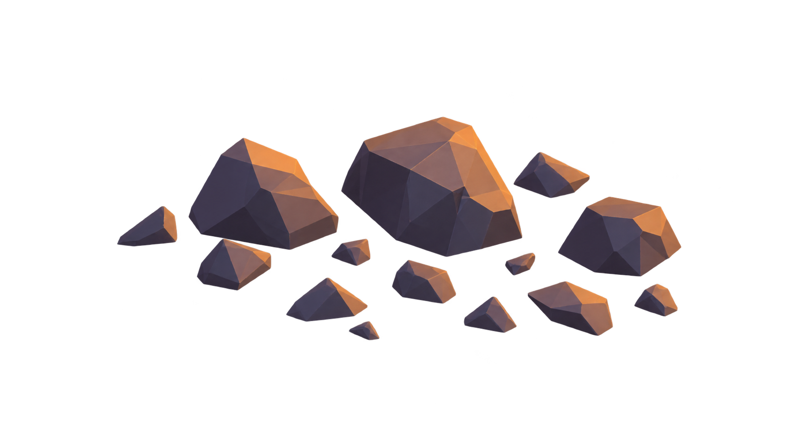 R12 · RubbleScattered stone chipsSparse decorative floor scatter; avoid individual collision/pathfinding obstacles.Modelling target: 0.05–0.25 m piecesLocate in referenceOpen separate PNG ↗
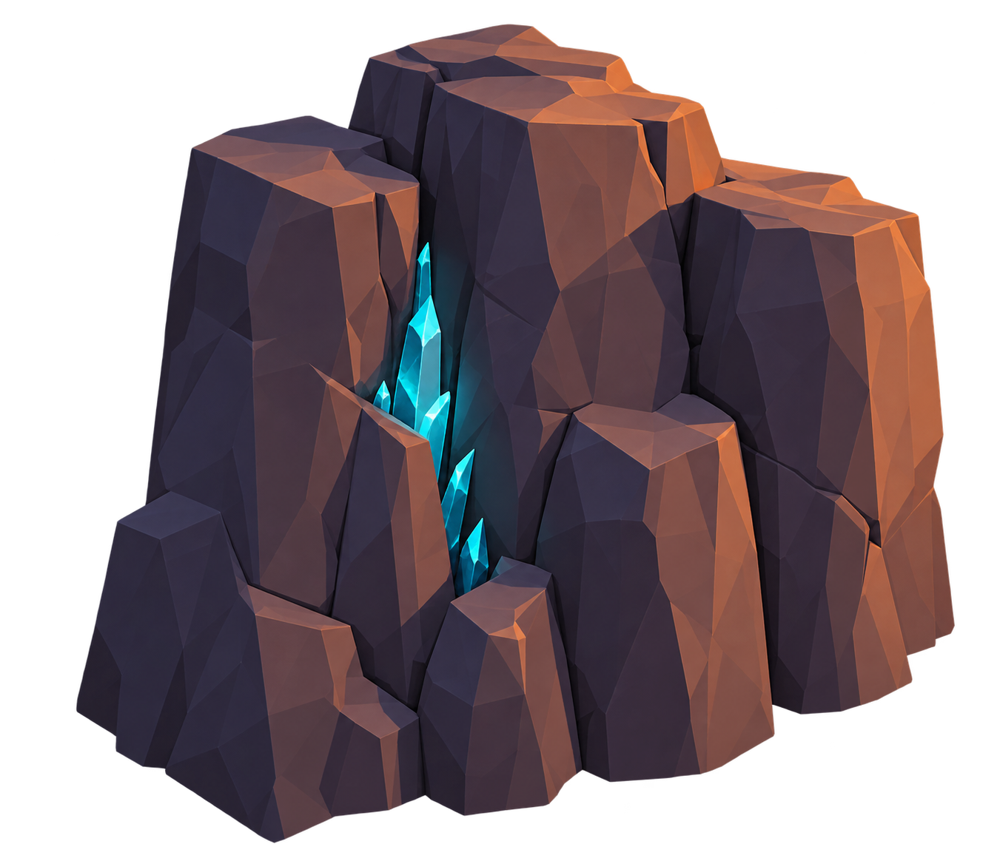 R13 · Crystal rocksTall crystal fissure cliffCrystal-bearing variant of the enclosing cliff.Modelling target: 4–8 m highLocate in referenceOpen separate PNG ↗
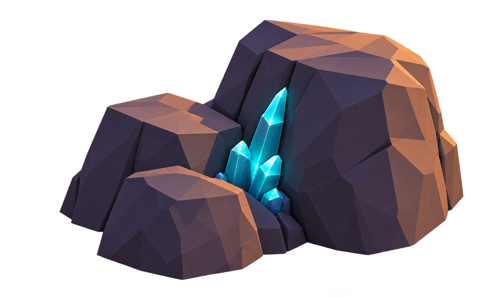 R14 · Crystal rocksLow crystal boulder clusterCrystal-bearing variant of low boulders near the boundary.Modelling target: 1–3 m highLocate in referenceOpen separate PNG ↗
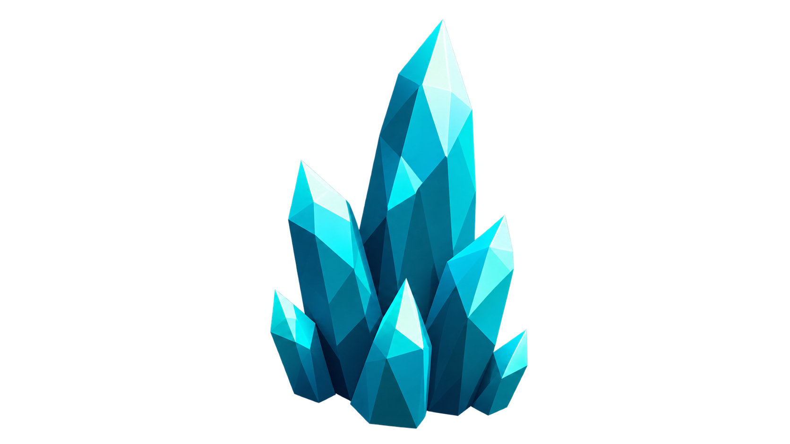 D01 · DecorationsCyan crystal tuftSeparate reusable cyan crystal insert; emission is a material setting.Modelling target: 0.15–0.7 m highLocate in referenceOpen separate PNG ↗
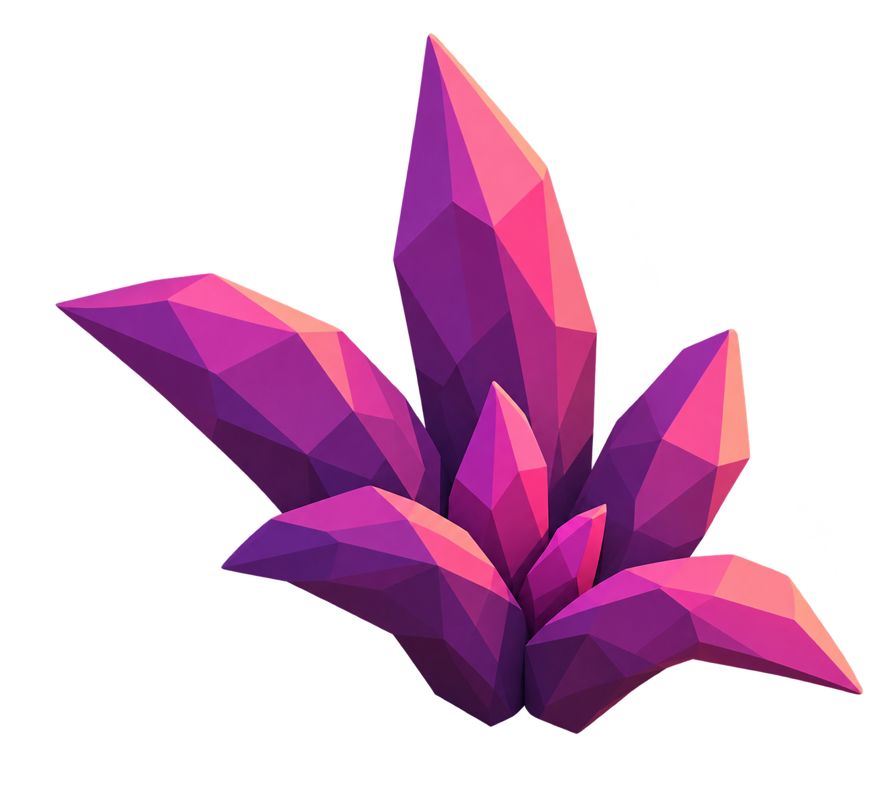 D02 · DecorationsViolet ground plant tuftSeparate violet foliage tuft at boulder bases.Modelling target: 0.15–0.5 m highLocate in referenceOpen separate PNG ↗